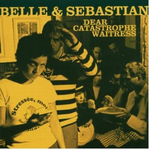

By No Ripcord Staff
Months of votes, writing and preparation has gone into this, No Ripcord’s definitive list of the best hundred albums released between 2000 and 2009. The first twenty are here, but don’t just skim over this selection – oh no. Contained here are some of the most inventive and enjoyable records of the previous decade, all with plenty within to recommend them. Dig in, investigate and enjoy.
100. TV On The Radio
“Dear Science”
(Interscope/Touch and Go/4AD – 2008)
TV On The Radio is one of the most prolific art-rock bands of the past decade, and when their opus Return To Cookie Mountain was released, the odds of its follow-up being anywhere near as compelling was slim. And yet, Dear Science, in its more catchy, danceable, and pop-oriented tone, was anything but a disappointment. The signature characteristics of TVOTR’s sound are well displayed, from David Sitek and Kip’s unmistakable voices, the heavy synth presence, and rhythms defying every standard convention of the rock standard. Ultimately, it’s the merging of electronic pop textures into TVOTR’s art rock palette that make Dear Science a success. Dave Hogg
99. Speech Debelle
“Speech Therapy”
(Big Dada – 2009)
Common consensus will tell you that this album succumbed to the ‘Curse of the Mercury Prize’ but quality-wise, it really couldn’t be further from the truth. There have been plenty of hip-hop albums where the artists charts their rise to prominence from humble beginnings, but few, if any, have done it with the warmth, humility, perspective and lyrical dexterity of Speech Debelle. Musically, Speech Therapy shows she’s willing to try something different too, with an organic, live feel to it, which has got more in common with the old school rap of two decades previous than its modern-day peers. Sales didn’t match plaudits, and Speech Therapy was dubbed a failure, but away from the hype and the critics, there’s a great album with plenty to say that knows how to say it. Joe Rivers
98. Sigur Rós
“( )”
(Fat Cat/Bad Taste – 2002)
There is no text other than the band’s name on the packaging of ( ), and there are no lyrics in any real language: Jónsi adopts his improvised 'Hopelandic' syllables and as such taps into a form of emotional expression purer and deeper than any analysis can possibly convey. What is contained in the 72 minutes of ( ) is beyond words, an orb of unfathomable feeling that is always the epitome of ethereal beauty, shifting with disturbing elegance between darkness and light, gradually freefalling into that wonderful, destructive climax. I’m sorry, it’s just that music this intensely evocative cannot be discussed with anything other than pretentious hyperbole. The eight tracks could not possibly be placed in any other order – ( ) is a singular, unique experience that completely lives up to its self-imposed mystique. Stephen Wragg
97. Yo La Tengo
“And Then Nothing Turned Itself Inside-Out”
(Matador – 2000)
Yo La Tengo albums tend to be cross-country triathlons – filled-to-capacity efforts that usually feature a sampling of pop music recontextualized, contrasting shards of beautiful noise with loungy, chillout textures designed for the anti-bohemian. And Then Nothing Turned Itself Inside-Out was the first Yo La Tengo record that came close to keeping a degree of consistency, wrapped around a lush, hypnotic drone all the way through, rounding simultaneously its heavier and softer moments. Patchy, arbitrary electronic touches give it a sense of aura and mystery, existing in a plane of three-dimensional space. And even when they touch Earth with the occasional indie chug, like in the propulsive Cherry Chapstick, they collect their findings and fly back to that distant, foreign locale. With a clear headspace, in a droopy, somnolent state before drifting into a lull, it truly sounds like an otherworldly experience. Juan Edgardo Rodriguez
96. Animal Collective
“Strawberry Jam”
(Domino – 2007)
This is, in my opinion, Animal Collective’s finest hour. Strawberry Jam capped off an ingenious three album run (Sung Tongs and Feels preceded it) and perfectly balances listenable songwriting with their stranger tendencies. It’s a much better balance of the two and sounds less plastic than the more-feted Merriweather Post Pavilion. It doesn’t take much time to get used to, yet it sounds like nothing else. From the first chopped seconds of Peacebone to the swirling vocals at the end of Derek, it’s a noisy, bizarre ride through what is, in the end, a really great collection of pop songs. Andrew Baer
95. The Killers
“Hot Fuss”
(Lizard King/Vertigo/Island – 2004)
Along with Is This It?, Franz Ferdinand and a few others, Hot Fuss, The Killers’ debut lest we forget, became a defining album in the mini-era of indie-pop guitar music until its saturated decomposition. Littered with at least five or six viable singles and decorated with all the pizzazz you would expect from the Las Vegas foursome, this album deftly infiltrated the club scene dragging with it a whole slew of indieists and fake-pop guitar wannabes. Hot Fuss remains the real deal as far as indie-pop is concerned and although Mr. Brightside may have clattered your eardrums a few too many times at this point, as a statement of intent from a debut album it’s quite an outstanding creation. Matt Bevington
 94. The Postal Service
94. The Postal Service“Give Up”
(Sub Pop – 2003)
Say what you will about Death Cab for Cutie after signing to Atlantic, The Postal Service’s one and only album has remained, since 2003 a milestone in indie pop. From the anthemic Such Great Heights to the post-nuclear holocaust We Will Become Silhouettes, the merging of Ben Gibbard’s melodic and lyrical genius with Dntel’s beats was so novel that it could never be replicated. Yes, it lacks Death Cab’s tendency to break for a dramatic musical build-up, but this is also not an indie rock one-off. This is minimalist electro-pop at its most romantic, idealistic, and insecure core. Perfect for the hopeless adolescent romantic within us all. Dave Hogg
93. Justin Timberlake
“FutureSex/LoveSounds”
(Jive – 2006)
Justin Timberlake made audiences sit up and take notice when his first solo record, Justified, liberated him from the school of boyband pop which he’d been part of with *NSYNC. His next step would be FutureSex/LoveSounds, which broadened his scope and added a dash of David Bowie and Giorgio Moroder to the standard R&B influences (Prince, Michael Jackson, Stevie Wonder) which had graced his debut. Vocally, he was surprisingly flexible, moving between his familiar tenor and nimble falsetto with ease. For a while, Justin Timberlake seemed poised to snatch the King of Pop’s crown, but that was before he swiftly abandoned his music career to concentrate on acting. Shame that. Gary McGinley
92. J Dilla
“Donuts”
(Stones Throw – 2006)
A restlessly creative sprint through the record collection of one of hip hop’s finest producers, Donuts takes in everything from 10cc (whose The Worst Band In The World is reinvented as the sublime Workinonit) to Dionne Warwick (Stop) and Raymond Scott (Lightworks) to Kool & The Gang (The Diff’rence). Unlike the decade’s countless mash-up records, which thrilled for precisely one listen, Donuts has proved itself to have real staying power. This is partly because Dilla was simply far too classy to resort to shock tactics; his love of the source material shines through and there genuinely isn’t a gimmick in sight. The other reason? A dazzling array of beats from one of the all-time greats. David Coleman
91. The Mountain Goats
“The Sunset Tree”
(4AD – 2005)
The Sunset Tree is dedicated to, and about, John Darnielle’s abusive stepfather, who died just weeks before the album was recorded. The songs describe the abuse Darnielle suffered across his childhood, his attempts at refuge, and his contextualisation and rationalisation of everything he went through. And yet, although the record is intensely personal and specific, he allows these songs to welcome a personal significance too. It’s about staying strong-willed in the face of insecurity and oppression. The Sunset Tree is so powerfully motivational and it can get you through all of your troubles. I doubt any record has ever made me cry as much as this one – in empathy, in self-belief, and in sheer awe. Stephen Wragg
90. Frou Frou
“Details”
(MCA/Island – 2002)
Frou Frou was a duo consisting of vocalist Imogen Heap and multi-instrumentalist Guy Sigsworth whose sole album, Details, melded intricate electronica with dreamy singer-songwriter pop. The ethereal feel of the record came courtesy of Guy Sigsworth’s masterful, multi-layered production which demonstrated why his services have been in-demand by artists as bold and varied as Björk, Seal, Madonna and Britney Spears. Despite impressive levels of critical acclaim, the album was not a commercial success and the duo subsequently disbanded to pursue individual music projects. The one-off nature of Details’ marriage of technology and artistry adds to its status as a lost gem. Gary McGinley
89. Godspeed You! Black Emperor
“Yanqui U.X.O.”
(Constellation – 2002)
If I wondered back in 2002 how the Quebecois felt about the new Pax Americana, a few choice minutes with this album would have settled the question. Nowhere in the Godspeed corpus can you find music of such horror and tension. The sixteen minute opener, 9-15-00, is so devastating that it hardly seems necessary to continue. Then they get up and do it all over again on Rockets Fall On Rocket Falls. Sure, it sticks to the tried and true formula of soft-loud-soft-repeat, but the music is constantly reaching for something and pulls the listener along by the scruff of their neck. Other post-rock poseurs should take notes. Alan Shulman
88. Love As Laughter
“Laughter's Fifth”
(Sub Pop – 2005)
Imagine my delight at discovering that the only other person in the world that trumpets the brilliance of this record not only writes for No Ripcord, but is also its Editor-in-Chief! I doled out one of my only ten point reviews for this record back in 2005 simply because I couldn’t find anything wrong with it. I’ll stick by that, even though I now think it stands out so much because of what is missing everywhere else. But on its own merits it works so well because it’s real – just guys playing great songs like it matters. If I turn just one more person on to this album, my work here will be done. Alan Shulman
87. Grandaddy
“The Sophtware Slump”
(V2 – 2000)
One of the more underrated bands of the late 90s/early 00s, Grandaddy released four pretty great records before splitting in 2006 (and reforming earlier this year), but this post-millennial concept record remains their crowning achievement. The lyrics, which almost exclusively focus on the meeting of man, technology, and the environment, veer from heartbreaking (Jed The Humanoid) to faintly ridiculous (Broken Household Appliance National Forest). The strangely polite distorted guitars in the latter track sound a little quaint twelve years on, but as an album The Sophtware Slump has still managed to remain most of its original potency. David Coleman
86. Eminem
“The Marshall Mathers LP”
(Aftermath/Interscope – 2000)
Clearly there are bad moments on this album; they’re mainly when Eminem’s acerbic sarcasm isn’t present. D12 are as uninteresting as usual and unleashing Dido on the world is inexcusable. It’s partly Eminem’s fault and partly the media’s that this album doesn’t get the plaudits it rightfully deserves. Jumping on the bandwagon, people sensationalised tracks like Kill You and Kim and ignored the underlying message of not taking every word in a pop song literally and not turning every media star into a role model. Did no one listen to the intro of Criminal? If you ignore the social commentary, you’ll find perfect party rap anthems like The Real Slim Shady and the aforementioned Criminal. Plus that rarest of beasts, Stan, a rap track that shows some concern for the listener. But, ugh, Dido... James McKenna
85. Belle & Sebastian
“Dear Catastrophe Waitress”
(Rough Trade – 2003)
The fifth studio album from Glasgow's finest, Belle & Sebastian, was something of a turning point in the band's career. A friendlier and more accessible album than those that had come before it, 2003's Dear Catastrophe Waitress built on the band's sterling reputation for fine songwriting whilst offering an altogether softer, poppier sound. DCW gave us some of the band's most memorable songs to date – from the quirky Step Into My Office, Baby, with lyrics laden with seedy undertones, to fan favourite I'm A Cuckoo. The band's change of musical direction was a hit with fans and critics alike, with the album earning Belle and Sebastian their first, and only Mercury Music Prize nomination to date. Craig Stevens
84. Yeah Yeah Yeahs
“Fever To Tell”
(Interscope/Fiction – 2003)
Capitalizing on the popularity of the garage rock revival that propped up The Strokes and The White Stripes as rock’s saviors, Fever to Tell, the debut album from garage punk trio Yeah Yeah Yeahs, was released in 2003. Co-produced by TV On The Radio’s David Sitek, Fever to Tell rep’d a reawakening of NYC fringe, frontwoman Karen O evocative of both Lydia Lunch and Debbie Harry; her voice either cutting glass in a throaty screech or emoting well enough to coax a melody. Absent of low end, guitarist Nick Zinner and drummer Brian Chase crafted an electrifying homage to vintage punk via ’77 (Tick), Cramps styled rockabilly (Black Tongue), eccentric no wave racket (Date With The Night) and 80s new wave rock mutations (Y Control), the album noticeably halved with later tracks carrying more polish. Their single Maps garnered much attention, standing out as the garage rock revival’s obligatory ballad. Sean Caldwell
83. The Hold Steady
“Boys And Girls In America”
(French Kiss Records – 2006)
Take one part Springsteen and one part Jarvis Cocker and you’re not too far off describing The Hold Steady. They make no bones about playing pretty derivative classic rock, but Craig Finn’s astute half-singing-half-shouting observations on life could only come from one person - and besides, it’s great fun to listen to. Boys And Girls In America feels hedonistic and carefree, for the most part; the majority of tracks contain some kind of reference to partying, drinking and getting high, although there are the comedown tracks to go with it. Musically, one uproarious riff flows into the next with little pause for breath, while Franz Nicolay’s contribution on keys is particularly inspired. Joel Stanier
82. Flying Lotus
“Los Angeles”
(Warp – 2008)
In ethnomusicology, there is the romanticized notion that any outsider can capture the authenticity of an area if they have the right recording equipment. This notion has been changing since our shift towards micro-libraries and cyber-archives floating in the crevices of the Internet's exosphere. For Steven Ellison, aka Flying Lotus, having the LA-born-and-raised stamp caused him to not only assemble a functioning symbol-system of his hometown but it also let loose a few shades of his spiritual side that were absent on 1983, and in full bloom on Cosmogramma – Los Angeles is a happy half-way point. Ellison's beats aid in the process of the body morphing from substance to spirit. But it wasn't just Ellison's body, it was also the body of Los Angeles, whose recent “Beat Renaissance” wouldn't have flourished if Flying Lotus didn't have the mystical courage to sonically express his love for where he comes from. Michael Iovino
81. Hot Chip
“The Warning”
(EMI/Astralwerks/DFA Records – 2006)
Second album The Warning sees London-based dance collective Hot Chip toe a perfectly-judged line between tongue-in-cheek indie-pop and floor-filling electro. Slightly more danceable than their debut effort, Coming On Strong, this album frequently manages to be both irresistibly catchy on the surface and heart-rending lyrically beneath that (see Boy From School and the title track). But they still know how to have fun, as the wonky melodies of Over And Over and hidden track Won’t Wash both testify. It’s brilliantly produced too, with an array of analogue synths and old-school MPCs sure to delight electro purists and enthusiastic newcomers alike. Joel Stanier
9 July, 2012 - 13:16 — No Ripcord Staff